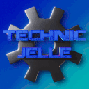
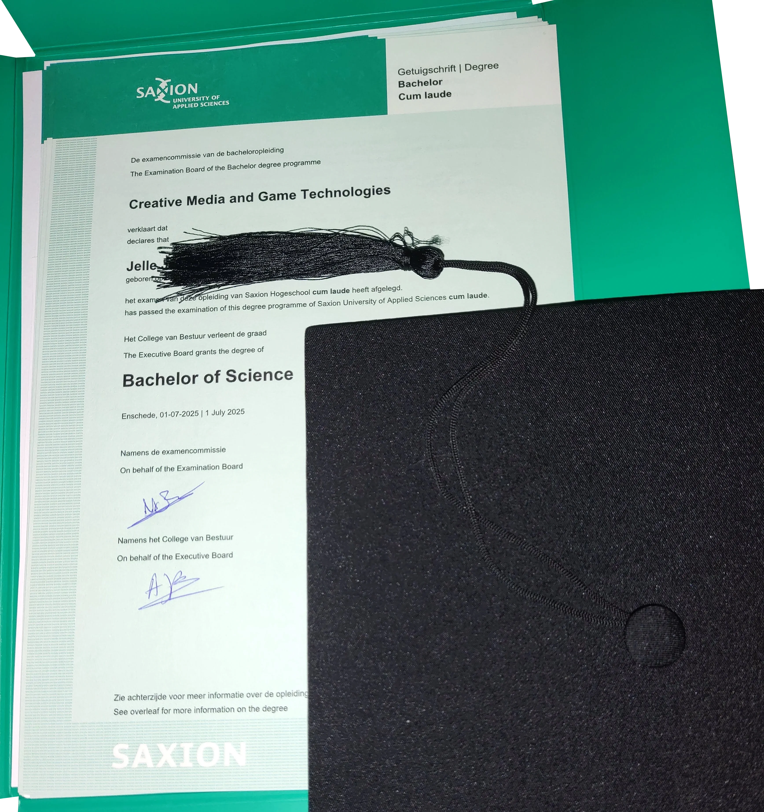

Hi there! 👋

Programming's my art
Empty files are my canvas
And code is my brush
My name is Jelle (IPA: /ˈjɛ.lə/), and I like creating stuff!
I am currently looking for a Game Graphics Programming job.
In July 2025, I graduated Cum Laude (With Honours)
the study Creative Media and Game Technologies at Saxion University of Applied Sciences.
I love learning fun things and having fun learning things!
Click here to read about my full journey as a developer
My first start with programming was GameMaker 8.1 Lite when I was eight. I started off only using the visual programming, and I never really got into GML. Sadly, most of the games I made back then have been lost to time.
A year or two later I discovered Minecraft with its redstone, and I was sold. When command blocks were added a little later, I was even more hooked. I spent years playing with it, learning and getting better. I also loved the big tech modpacks, though my computer back then couldn't really run them well.
When I was around eleven, my primary school installed Scratch on their computers. Me being the curious type and seeing that a new icon had appeared on the desktop, I clicked it and almost immediately recognized it as being a similar thing to GameMaker. I quickly became quite good at it, though sadly most of those projects have also been lost.
Around thirteen, I tried my hand at making Android Apps with Android Studio, which was my first usage of a "real" IDE. It was difficult to suddenly use such a huge, complicated program, but ultimately, I did succeed in making an app that my parents still use to this day. I enjoyed learning Java during the process of making these apps, though I probably should have learned Java first, and only then started making apps with it.
Around 2017, I played a lot of the game Scrap Mechanic, and when they released the mod tool, I was one of the first people to release a mod onto the Steam Workshop. My most popular mod has been downloaded almost 50 000 times!
For the second half of secondary school, I had to buy a TI 84 CE-T calculator and I almost immediately started making useful programs and fun games in TI-Basic.
Then I discovered The Coding Train on YouTube and I started using Processing a lot. So for the next four or five years I used that for basically all of my programming. I don't use it that much anymore these days, but I still really like it.
I have also made a few Minecraft plugins in Java, scripts in Python, websites with raw HTML and CSS, and C++ and C programs, among many other things. I like to experiment with a lot of things and learn a lot.
During my first year at Saxion I have learnt C# with their GXP Engine, which I'm working on overhauling with a couple of fellow students. I also learnt Unity, which I have since made a couple game (prototypes) with.
In the holiday after that first year, I worked a lot on a project that I felt needed to exist: GitDroid. It's an Android app, made with Flutter, that allows you to easily install and update other Android apps from GitHub. It's still in development, but it's already quite usable.
During my second year at Saxion, I officially learnt C++ (I'd been tinkering with it off and on for a couple of years prior) and I'm also learning Unreal Engine. Learning Rust also seems like fun!
I've also been continuing my use of Flutter, and I've been making some other things with it as well, such as CMGTwitch. During my usage of Flutter, I've naturally been using Dart, which I've grown to like quite a lot.
During my third year at Saxion, I had my first internship at a company that develops XR trainings for other businesses. It was a lot of fun to work there, with such friendly and knowledgeable colleagues. I learnt a lot there.
In the first half of my fourth and last year at Saxion, I was a part of a ten-person team,
where we worked on an Unreal Engine VR Experience together.
My role in the project was of Infrastructure Engineer, and as part of that, I set up Perforce Helix Core as Version Control System for us all to use.
In addition to that, I set up automated builds with Jenkins, to keep track of build-breaking bugs that might slip in.
In that same time, I also worked as a Teacher's Assistant for Saxion, helping with the C++ and 3D Rendering courses.
In the second half, I did a Graduation Internship at Rythe Interactive, as a Graphics Programmer. I was tasked with creating prototypes for the new Low Level Rendering Interface for the next rewrite of the engine. During this project, I solidified my knowledge of the basics of modern GPU Programming with Vulkan, but also SDL3's GPU API. You can read the graduation thesis I wrote for this here!
In July 2025, I graduated Cum Laude (With Honours) the study Creative Media and Game Technologies at Saxion University of Applied Sciences.

Not only do I really like making games, I also really enjoy making tools for people to make their lives easier in some way. Some examples of things I made for other people are WesleyChess, LifeWrench, Hydr8, and Simple Block Commands. Hardly a week goes by where I don't automate some part of my own or someone else's life.
My logo was made by myself with Blender. Check out my other art on my ArtStation.
Find me on other platforms 🔗
Experiences 🔗
Projects 🔗
🎮 Games 🔗


A combat flight sim game in space made in Unity
Read about this project on my blog →


An Anti-Gravity Racing game set in a Digital Swamp


Multiplayer couch party game with innovative controls where you play as pirates looking for treasure!

Your chickens have escaped, so you must catch them again! But watch out! There is a fox on the hunt for them as well! (Entry for the XP Study Association's 2024 GameJam)


2D top-down space traversal game. Entry for the XP Study Association's 2025 GameJam


The game I have made for the intake for the study Creative Media and Game Technologies at Saxion University of Applied Sciences


Afterparty is a hectic and fast-paced game in which you must clean up the house after a party, before your parents arrive home in five minutes.


A very basic turn-based fighting game in SFML, made for my uni's C++ course


2D Slasher & Bullet Hell Game made for my Game Design uni course
Doom-ish clone made in the Saxion GXP Engine
Pong, but with flappy bird controls for extra agony


The project for the Global Game Jam 2024 @ Saxion University of Applied Sciences

Connect multiple atoms together to create the required molecule! [CMGT Y1Q4 Game: Catoms.]


Currently most people working in STEM fields are men, but She Can VR exists to show you that women can have an equally big impact on the world of science!


Small blocky Jigsaw game in Processing :)
⚙️ Game Engines 🔗
A simple cross-platform 2D C# game engine. Initially used for education at Saxion CMGT, but after its deprecation as a learning tool, revived as full, public open source project!
Collection of experiments with various GPU APIs, for evaluating which one to use for the Rythe Engine rewrite
💡 Tech Demos 🔗
A Flutter tech demo that allows users to upload any font they wish to use for the whole app to use
A recreation of my uni's OpenGL assignment in Vulkan
A tower defence game, made for my Software Architecture class
Read about this project on my blog →A repository that shows a working GitHub Actions workflow for the default UE5 VR Game Template
Not on GitHub, because this was locally hosted with Perforce, managed by me
Read about this project on my blog →🖥️ Desktop Software Tools 🔗
A GUI wrapper around the BlueMap CLI, mainly to make using BlueMap easier to use on single player worlds.
📱 Mobile Apps 🔗
A third party Android app manager for apps uploaded to GitHub releases
Simple Android chess app without any rules or restrictions. Useful for trying different rulesets
Android app to redirect embed-fixer links to their respective official apps, instead of going through the browser
A Flutter app for Android and iOS to scan products to add to UIMS (Unrealitix Inventory management System)
Magic: The Gathering helper app for Android
🌐 Websites 🔗
My GitHub profile's About Me page, and at the same time also my personal website
An app concept that lets you easily (re)watch Saxion CMGT lectures
A webapp that helps generate BlueMap markers
Guide on how to get started with GPU Programming for beginners, with SDL3's GPU API
🔌 Server Software 🔗
A server application that listens for HTTP POST requests and broadcasts the body of the request to all connected websockets.
📝 Scripts 🔗
This is a collection of all of my AHK Scripts
Turns a sentence into Discord reaction messages!
🤖 Discord Bots 🔗
Discord bot for the Glyphs & Alphabets server.
A simple Discord bot that reminds you to drink water
🌌 Simulations 🔗
A solar system simulation environment where you can play around with planets, suns, gravity and orbits
A simple, yet pretty fireworks show, coded in C++ with the OLC Pixel Game Engine
📚 Libraries 🔗
Very opinionated HTML bindings, for personal use in generating websites.
A simple Java library that checks for updates from a GitHub repo's releases
A small library with a collection of useful functions for Minecraft paper plugins
A small library with a collection of useful functions for BlueMap addons
⛏️ Minecraft Plugins 🔗
A Minecraft Paper plugin that allows server owners to assign commands that get run when a block is clicked
A Minecraft Paper plugin that invites players to your Discord server if they haven't done so yet
Minecraft Paper plugin and BlueMap addon that adds markers where players have logged off
BlueMap Native addon that displays signs on your map
Minecraft Paper plugin and BlueMap addon that adds chat messages to the map
Minecraft Paper plugin and BlueMap addon that allows you to track entities on your map, with lots of filtering options
Allow your players to discover your BlueMap more immersively, by syncing with in-game maps!
Minecraft Paper plugin and BlueMap addon that adds GeyserMC/floodgate support
BlueMap Native addon that adds a customisable marker at the world spawn
A template project you can use as a base for your own BlueMap Native Addon
Minecraft Paper plugin and BlueMap addon that adds markers for all structures
Minecraft Paper plugin and BlueMap addon that adds markers where players have died
Minecraft Paper plugin and BlueMap addon that adds player hiding functionality to BlueMap
Tiny Paper plugin addon for BlueMap to more easily create new maps
A repository of useful scripts and styles for the BlueMap Web App. Accepting PRs with addons from others
Minecraft Paper plugin and BlueMap addon for using a custom skin server with BlueMap